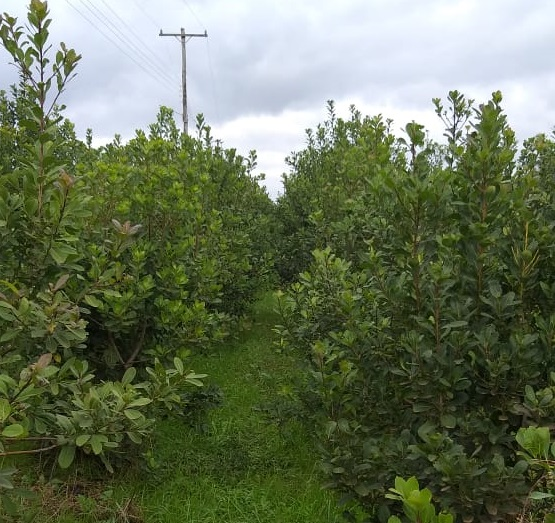

Para cultivar essa planta incrível não é tão difícil assim, vamos dar uma olhada.
Veja abaixo a explicação de um produtor de erva-mate.
"Primeiramente você colhe a semente do pé, coloca na areia para quebrar a dormência, semeia em um canteiro, depois retira ela e coloca no jacá, cuida da plantinha de 5 a 6 meses, e então é plantada na terra. Após três anos, é feita a primeira poda, então a partir daí entre ciclos de dois em dois anos, é feita a colheita, e vendida para as ervateiras."
"No passado a colheita era diferente, fazia-se a poda, então reunida em um "sapeco", os galhos eram passados em uma espécie de fogueira, depois de secos, eram quebrados a mão, então era feito o feiche, para ser transportada até o barbaquá (sapecadeira de erva), depois disso era aberto os feiches e esparramados em um carijo, então era feito o fogo, em baixo, para secar. Após feito isso, retirava-se a erva, já seca, aí era colocada na canxa, então um rolete passava por cima da erva, sendo puxado por um cavalo, daí saia a erva canxeada."

Por que a erva é o nosso ouro verde? Descubra aqui.